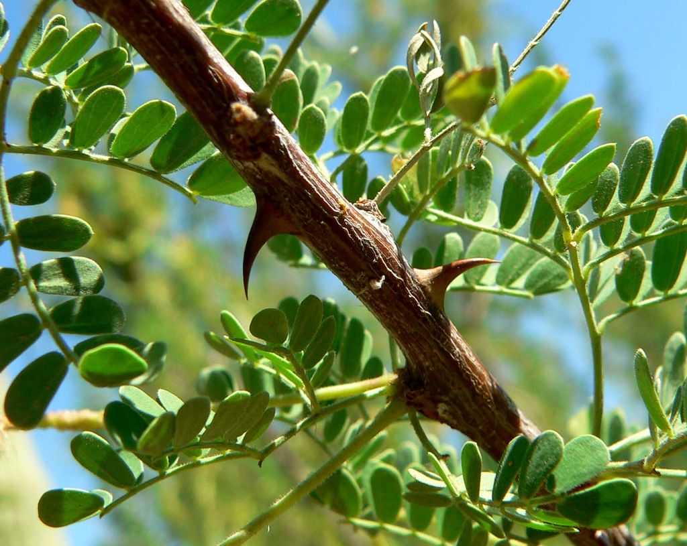
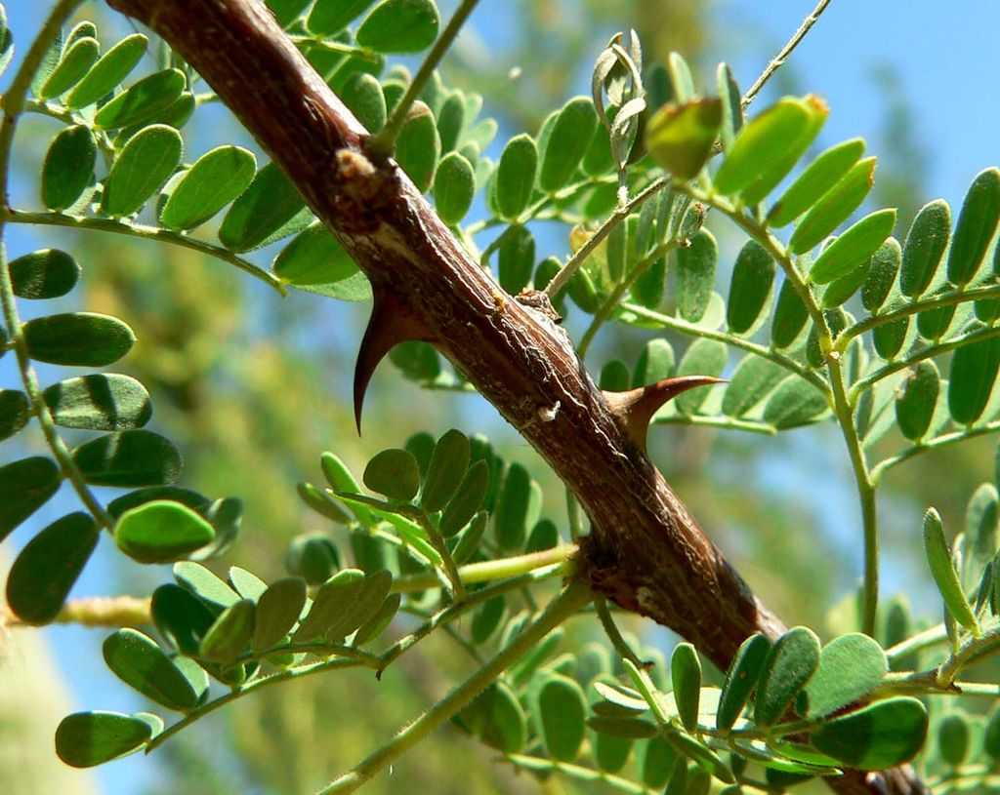

محمية سالوجا وغزال
تقع محمية سالوجا وغزال في جنوب مصر، وتُعد أصغر محمية طبيعية في البلاد، إذ لا تتجاوز مساحتها نصف كيلومتر مربع، وتتكون من مجموعة جزر داخل نهر النيل. توجد المحمية بمحافظة أسوان، تحديدًا عند الشلال الأول، على بُعد حوالي 3 كيلومترات شمال خزان أسوان. يحدها من الجنوب جزيرة سهيل، ومن الشمال جزر إسبوسارت وأمون وجزيرة النباتات. وقد أُعلنت منطقة محمية طبيعية بقرار من رئيس مجلس الوزراء المصري عام 1986 بهدف الحفاظ على التنوع البيولوجي وحماية الأنواع المهددة بالانقراض من الحيوانات والنباتات والثدييات.
 
